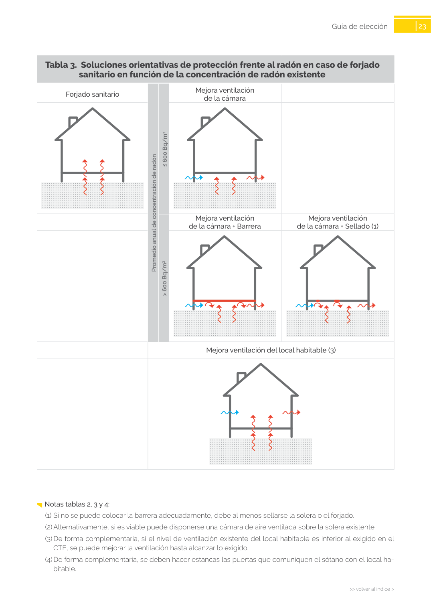

<!doctype html>
<html lang="es"><head><meta charset="utf-8">
<meta name="viewport" content="width=device-width, initial-scale=1">
<title>GUIA · en función de la concentración de radón existente</title><link rel="stylesheet" href="../estilo.css">
</head><body>
<nav><a href="../index.html">Índice</a> › <a href="../doc/guia-pdf-f3314b0414fe-sin-fecha-e58e54b822cf.html">GUIA</a> › a0056</nav>

<header class="meta">
<p><a href="../doc/guia-pdf-f3314b0414fe-sin-fecha-e58e54b822cf.html">GUIA</a> · en función de la concentración de radón existente · versión sin-fecha · capa guia</p>
</header>
<div class="cita"><strong>Cita:</strong> GUIA · ID técnico a0056 · en función de la concentración de radón existente · páginas físicas pág. 22-23 (impresas: ['22', '23'])</div>
<p>Formatos: <a href="../../contenido/docs/GUIA-PDF-f3314b0414fe/sin-fecha__e58e54b822cf/apartado/a0056__en-funcion-de-la-concentracion-de-radon-existente.json">JSON compacto</a> · <a href="../../contenido/docs/GUIA-PDF-f3314b0414fe/sin-fecha__e58e54b822cf/apartado/a0056__en-funcion-de-la-concentracion-de-radon-existente.md">Markdown</a> · <a href="../../contenido/docs/GUIA-PDF-f3314b0414fe/sin-fecha__e58e54b822cf/fuente.pdf">PDF fuente</a></p>
<p><a href="../doc/guia-pdf-f3314b0414fe-sin-fecha-e58e54b822cf.html">Ámbito del documento</a> · <a href="../doc/guia-pdf-f3314b0414fe-sin-fecha-e58e54b822cf.html#ambito">texto del ámbito</a> ·
<a href="../doc/guia-pdf-f3314b0414fe-sin-fecha-e58e54b822cf.html">documento y tablas</a></p>
<nav><a href="guia-pdf-f3314b0414fe-sin-fecha-e58e54b822cf__a0055.html">← Guía de elección</a> <a href="guia-pdf-f3314b0414fe-sin-fecha-e58e54b822cf__a0057.html">sanitario en función de la concentración de radón existente →</a></nav>
<h1>en función de la concentración de radón existente</h1>
<p>Tipo: notas, formulas, tablas, figuras · nivel 3 · sección estimada: Guía de elección · padre: a0055</p>
<pre class="literal">en función de la concentración de radón existente
Solera
Barrera
Sellado (1)
Barrera + Despresurización
Sellado (1) + Despresurización
Barrera +
Cámara de aire ventilada (2)
Mejora ventilación del local habitable (3)
Promedio anual de concentración de radón
&gt; 600 Bq/m3
≤ 600 Bq/m3

23
&gt;&gt; volver al índice &gt;
&gt;&gt; volver al índice &gt;
Guía de elección
Notas tablas 2, 3 y 4:
(1)	Si no se puede colocar la barrera adecuadamente, debe al menos sellarse la solera o el forjado.
(2)	Alternativamente, si es viable puede disponerse una cámara de aire ventilada sobre la solera existente.
(3)	De forma complementaria, si el nivel de ventilación existente del local habitable es inferior al exigido en el
CTE, se puede mejorar la ventilación hasta alcanzar lo exigido.
(4)	De forma complementaria, se deben hacer estancas las puertas que comuniquen el sótano con el local ha­
bitable.
Tabla 3.  Soluciones orientativas de protección frente al radón en caso de forjado</pre>
<h2>Notas y excepciones (literales)</h2><ul><li>Notas tablas 2, 3 y 4:</li></ul><h2>Tablas en estas páginas</h2><ul><li>p. 22 · <a href="../../contenido/docs/GUIA-PDF-f3314b0414fe/sin-fecha__e58e54b822cf/tabla/p0022_t01.json">p0022_t01.json</a> · <a href="../../contenido/docs/GUIA-PDF-f3314b0414fe/sin-fecha__e58e54b822cf/tabla/p0022_t01.csv">.csv</a></li><li>p. 23 · <a href="../../contenido/docs/GUIA-PDF-f3314b0414fe/sin-fecha__e58e54b822cf/tabla/p0023_t01.json">p0023_t01.json</a> · <a href="../../contenido/docs/GUIA-PDF-f3314b0414fe/sin-fecha__e58e54b822cf/tabla/p0023_t01.csv">.csv</a></li></ul><h2>Página visual</h2><figure><a href="../../contenido/docs/GUIA-PDF-f3314b0414fe/sin-fecha__e58e54b822cf/figura/p0022.png"></a><figcaption>Página visual 22 (fuente para fórmulas/tablas/figuras)</figcaption></figure><figure><a href="../../contenido/docs/GUIA-PDF-f3314b0414fe/sin-fecha__e58e54b822cf/figura/p0023.png"></a><figcaption>Página visual 23 (fuente para fórmulas/tablas/figuras)</figcaption></figure><p class="aviso">PDF fuente redistribuible: copia fiel enlazada en esta página (SHA256 verificado).</p>
<footer>Generado estáticamente desde JSON normalizado; sin JavaScript ni servicios externos.
El JSON es la fuente; este HTML es caché reproducible.</footer>
</body></html>
